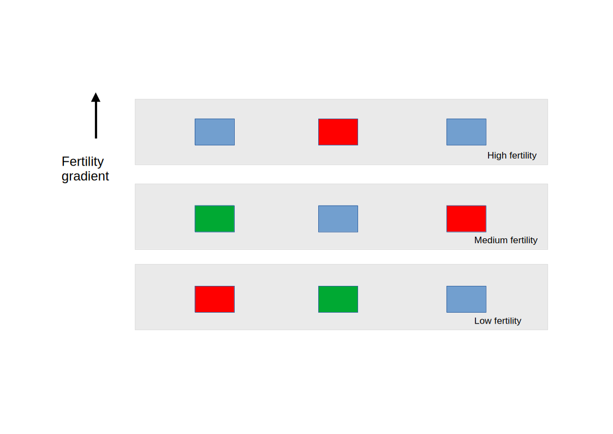
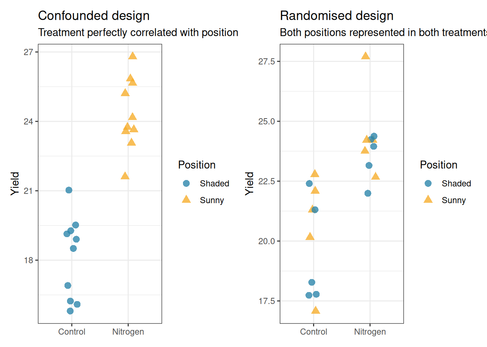

Statistical analysis does not begin when you open R. It begins when you decide how to collect your data. The most sophisticated model cannot rescue an experiment that was poorly designed, it can only make the best of what was given to it, and sometimes not even that. Fisher understood this at Rothamsted a century ago, and the insight has not aged: the validity of any statistical inference depends on decisions made at the design stage, long before the first observation is recorded.
This chapter returns to first principles. It covers the three foundational concepts that underpin every valid experiment: randomisation, replication, and blocking. It shows how to design an experiment with the intended analysis in mind, rather than discovering after data collection that the design and the analysis are mismatched.
It also catalogues the most common design mistakes in biological research and explains why they are mistakes. And it makes the case for prospective power analysis as a professional obligation, not an optional refinement.
12.1 Randomisation, Replication, and Blocking: The Triad
12.1.1 Randomisation
Randomisation is the act of assigning experimental units to treatments by a chance mechanism, drawing lots, using a random number generator, or any process that gives every unit an equal probability of receiving any treatment. It is the single most important principle in experimental design, and its importance cannot be overstated.
The reason randomisation matters is subtle but fundamental. Randomisation does not make the treatment groups identical at baseline, with small samples, they may differ considerably by chance. What randomisation guarantees is that any differences between groups at baseline are due to chance alone, not to any systematic bias in how treatments were assigned. This means that if we observe a difference in outcomes between groups, we can attribute it to the treatment rather than to a pre-existing difference between the groups.
Without randomisation, confounding is inevitable. Suppose you assign your healthiest plants to the nitrogen treatment (see the example from chapter 1) because they “look like they can handle it.” Any difference in yield between the nitrogen and control groups now reflects both the effect of nitrogen and the pre-existing difference in plant health. These two effects cannot be separated, and the analysis is worthless regardless of how sophisticated the statistics are.
Code
# Randomisation demo in Rset.seed(42)# Proper randomisation: every plant has equal probability# of receiving any treatmentn_plants<-24treatments<-rep(c("Control", "Nitrogen", "Phosphorus"), each =n_plants/3)# Randomly permute treatment assignmentsrandom_assignment<-sample(treatments)cat("Randomised treatment assignments:\n")
Replication means applying each treatment to multiple independent experimental units. Without replication, you cannot estimate the within-treatment variation that forms the denominator of the \(F\) ratio, and without that denominator, no inference is possible.
The key word is independent. Replication does not mean measuring the same unit multiple times (that is pseudoreplication, see section 2.1.3). It means having genuinely separate units, separate plants, separate animals, separate plots, each of which received the treatment independently and contributes an independent piece of information about the treatment effect.
How many replicates are needed? The answer depends on the expected effect size, the within-treatment variability, and the desired power, which is exactly what power analysis quantifies (Section 3.4 and Section 12.4). As a rough guide for planning purposes, fewer than 3 replicates per treatment makes any statistical test nearly powerless, 5-8 is adequate for moderate effects, and 10-20 may be needed for small effects or highly variable responses.
12.1.3 Blocking
Blocking is the act of grouping experimental units into homogeneous sets, blocks, before assigning treatments, so that each block contains one unit from each treatment. The purpose is to remove a known source of nuisance variation from the error term, increasing the precision of treatment comparisons.
12.1.4 A Concrete Example: A Field With a Fertility Gradient
Imagine a rectangular field divided into three horizontal strips running east to west. The soil fertility increases from south to north, perhaps because of natural drainage patterns, organic matter accumulation, or historical land use. This gradient will affect crop yield regardless of which fertiliser is applied.
We divide the field into three blocks, South, Middle, and North, each containing three plots. Within each block, we randomly assign one plot to each fertiliser treatment: Control, Nitrogen, and Phosphorus.

A randomised complete block design in a field with a north-south fertility gradient. The field is divided into three blocks (South, Middle, North) corresponding to low, medium, and high soil fertility. Within each block, the three treatments are randomly assigned to plots. The gradient affects all plots equally within a block, so block-to-block differences can be separated from treatment differences.
The key feature of this design is that every treatment appears exactly once in every block. Whatever the fertility level of the North block, all three treatments experience it equally, so the block effect cannot be confused with the treatment effect.
12.1.5 The Treatment Error Formula
Before seeing the benefit of blocking in numbers, recall what the treatment error term actually is. In a one-way ANOVA without blocking, the error mean square is:
A large \(MS_{\text{error}}\) makes this ratio smaller and the test less powerful. Blocking removes the block variation from the numerator of \(MS_{\text{error}}\), leaving a smaller, cleaner noise estimate:
where \(b\) is the number of blocks. The block sum of squares \(SS_{\text{block}}\) is extracted from the error, shrinking \(MS_{\text{error}}\) and therefore increasing the F ratio for the treatment comparison.
12.1.6 Simulating the Field Experiment
Code
# The field data, yields assigned to reflect:# 1. A real treatment effect (Nitrogen > Phosphorus > Control)# 2. A strong north-south fertility gradient# 3. Small residual plot-to-plot noiseset.seed(42)df_field<-data.frame( block =factor(rep(c("South", "Middle", "North"), each =3), levels =c("South", "Middle", "North")), treatment =factor(c("Control", "Nitrogen", "Phosphorus", # South block"Nitrogen", "Phosphorus", "Control", # Middle block"Phosphorus", "Control", "Nitrogen"# North block), levels =c("Control", "Nitrogen", "Phosphorus")),# Block fertility gradient: South = low, North = high# adds 0, 8, 16 units to yields within each block block_effect =rep(c(0, 8, 16), each =3),# True treatment effects: Control = 0, N = 6, P = 3 treatment_effect =c(0, 6, 3, # South6, 3, 0, # Middle3, 0, 6)# North)# Observed yield = grand mean + block effect + treatment effect + noisedf_field$yield<-20+df_field$block_effect+df_field$treatment_effect+round(rnorm(9, 0, 1.2), 1)
#> block treatment yield
#> 1 South Control 21.6
#> 2 South Nitrogen 25.3
#> 3 South Phosphorus 23.4
#> 4 Middle Nitrogen 34.8
#> 5 Middle Phosphorus 31.5
#> 6 Middle Control 27.9
#> 7 North Phosphorus 40.8
#> 8 North Control 35.9
#> 9 North Nitrogen 44.4
12.1.7 Computing the Treatment Error: With and Without Blocking
# Analysis WITHOUT blocking# All variation not explained by treatment goes into the errorfit_no_block<-aov(yield~treatment, data =df_field)ss_treat_nb<-summary(fit_no_block)[[1]]["treatment", "Sum Sq"]ss_error_nb<-summary(fit_no_block)[[1]]["Residuals", "Sum Sq"]df_error_nb<-summary(fit_no_block)[[1]]["Residuals", "Df"]ms_error_nb<-ss_error_nb/df_error_nbf_nb<-summary(fit_no_block)[[1]]["treatment", "F value"]p_nb<-summary(fit_no_block)[[1]]["treatment", "Pr(>F)"]# Analysis WITH blocking # Block variation is extracted from the errorfit_blocked<-aov(yield~treatment+block, data =df_field)ss_treat_b<-summary(fit_blocked)[[1]]["treatment", "Sum Sq"]ss_block<-summary(fit_blocked)[[1]]["block", "Sum Sq"]ss_error_b<-summary(fit_blocked)[[1]]["Residuals", "Sum Sq"]df_error_b<-summary(fit_blocked)[[1]]["Residuals", "Df"]ms_error_b<-ss_error_b/df_error_bf_b<-summary(fit_blocked)[[1]]["treatment", "F value"]p_b<-summary(fit_blocked)[[1]]["treatment", "Pr(>F)"]
#> === Summary ===
#> MS error reduced from 72.79 to 1.54 by blocking
#> F value increased from 0.418 to 19.824
The two analyses use identical data, the same nine yield observations from the same nine plots. The only difference is whether the block structure is accounted for in the model.
Without blocking, the \(SS_{\text{error}}\) includes both the genuine residual plot noise and the large fertility gradient running from south to north. This inflates \(MS_{\text{error}}\), shrinks the F ratio, and makes the treatment differences harder to detect.
With blocking, the \(SS_{\text{block}}\) is extracted from what would otherwise be the error. The \(SS_{\text{error}}\) now contains only the genuine residual noise that is the small, uncontrollable plot-to-plot differences that remain after removing both the treatment effect and the block gradient. The \(MS_{\text{error}}\) drops substantially, the F ratio rises, and the p-value falls. This happens not because the data have changed, but because the analysis is now asking the right question: do treatments differ after accounting for the known gradient?
This is the mechanical benefit of blocking stated precisely: it moves known variation out of the error term, leaving a cleaner and smaller noise estimate against which the treatment effect is judged.
12.1.8 Reading the Numbers
The two analyses use identical data, the same nine yield observations from the same nine plots. The only difference is whether the block structure is accounted for in the model, and the consequences are dramatic.
Without blocking, \(SS_{\text{error}} = 436.75\) against a \(SS_{\text{treatment}} = 60.93\). The error sum of squares is more than seven times larger than the treatment sum of squares because it contains the entire north-south fertility gradient, 430 units worth of variation that has nothing to do with fertiliser but is lumped into the noise. The resulting \(MS_{\text{error}} = 72.79\) overwhelms the treatment signal, producing \(F_{2,6} = 0.418\) and \(p = 0.676\). A researcher using this analysis would conclude that fertiliser has no detectable effect which would be a false negative caused entirely by a preventable design flaw.
With blocking, the picture reverses completely. \(SS_{\text{block}} = 430.61\) is extracted from the error and placed in its own term, this is the fertility gradient, accounted for and set aside. What remains in \(SS_{\text{error}}\) is only \(6.15\): the genuine plot-to-plot residual noise after removing both the treatment effect and the gradient. \(MS_{\text{error}}\) drops from 72.79 to 1.54, a 47-fold reduction, and the \(F\) ratio climbs from 0.418 to \(F_{2,4} = 19.82\), with \(p = 0.008\).
The \(SS_{\text{treatment}}\) is identical in both analyses, 60.93 in both cases. The treatment effect in the data has not changed. What changed is the denominator of the F ratio: by removing the gradient from the error term, the analysis can finally hear the treatment signal above the noise.
Two additional details are worth noting. First, the blocked analysis has fewer error degrees of freedom (\(df = 4\) instead of \(df = 6\)) because two degrees of freedom were spent estimating the block effects. Despite this loss, the test is far more powerful which is a direct consequence of the enormous reduction in \(MS_{\text{error}}\). Second, this example is not contrived: a fertility gradient with \(SS_{\text{block}} = 430\) versus a residual of \(SS_{\text{error}} = 6\) is entirely realistic in agricultural and ecological field experiments. Gradients of this magnitude are common, which is precisely why blocking has been standard practice in field experimentation since Fisher’s time at Rothamsted.
The practical lesson is unambiguous: if you know a gradient exists, block on it before you randomise. Failing to do so does not just reduce power, as these numbers show, it can make a real and substantial treatment effect completely invisible.
12.1.9 When to Block
Block when there is a known, measurable source of variation that will affect the response but is not the treatment of interest. Common blocking factors in biology include:
Spatial position: location in a greenhouse, field, or laboratory bench.
Temporal batches: animals processed on different days, assays run in different batches, samples collected in different seasons.
Individual characteristics: litters in animal experiments, maternal plants in seed studies, patients recruited from different centres.
Do not block on variables that are themselves affected by the treatment as this introduces bias. And do not block on a variable that is unrelated to the response: adding an irrelevant block factor costs degrees of freedom from the error term and can actually reduce power.
12.2 Designing for the ANOVA You Want to Run
12.2.1 Start With the Analysis
The most common design error in biology is designing an experiment without thinking about how it will be analysed. The design and the analysis are not separate activities, they are two sides of the same coin. Every feature of the design has a direct counterpart in the statistical model, and mismatches between design and analysis are the primary source of invalid inference.
The practical discipline is to write the analysis plan, including the model formula (in R), before collecting any data:
# Write your intended model formula before data collection# One-way ANOVAaov(response~treatment, data =df)# Randomised complete block designaov(response~treatment+block, data =df)# Two-way factorialaov(response~factorA*factorB, data =df)# Split-plotaov(response~whole_plot_factor*subplot_factor+Error(whole_plot_unit/subplot_factor), data =df)# Repeated measureslmerTest::lmer(response~treatment*time+(1|subject), data =df)# Nested designaov(response~treatment+Error(block/subplot), data =df)
Writing the formula in advance forces you to identify the experimental unit, the error term, and the random effects structure before the data are collected. If you cannot write the formula, the design is not yet fully specified.
12.2.2 Match the Unit of Analysis to the Unit of Randomisation
The experimental unit, the entity that received the treatment independently, must be the unit of analysis. This principle, stated simply, prevents most cases of pseudoreplication.
A decision tree for identifying the experimental unit:
What was randomly assigned to receive the treatment?
Could two observations have received different treatments? If no, they are from the same experimental unit.
Is the treatment applied to groups of individuals, or to individuals separately?
# Example 1: Correct, individual plants randomised to treatment# Experimental unit = plant, n = 20 per treatmentdf_correct<-data.frame( yield =rnorm(60, mean =20, sd =3), treatment =rep(c("A", "B", "C"), each =20), plant =1:60)# Correct analysis: plant is the unitsummary(aov(yield~treatment, data =df_correct))
#> Df Sum Sq Mean Sq F value Pr(>F)
#> treatment 2 28.2 14.12 1.234 0.299
#> Residuals 57 652.1 11.44
# Example 2: Wrong, treatment applied to cages,# multiple animals measured per cage# Experimental unit = cage (n = 4 per treatment),# not animal (n = 20 per treatment)set.seed(42)cage_effect<-rnorm(12, 0, 2)# 4 cages per treatmentdf_pseudo<-data.frame( weight =c(sapply(1:12, function(c){rnorm(5, mean =20+cage_effect[c], sd =0.5)})), treatment =rep(rep(c("A", "B", "C"), each =4), each =5), cage =rep(1:12, each =5))# Wrong: treats animals as independentwrong_fit<-aov(weight~treatment, data =df_pseudo)cat("Wrong analysis df (error):",summary(wrong_fit)[[1]]["Residuals", "Df"], "\n")
#> Wrong analysis df (error): 57
# Correct: uses cage meanscage_means<-aggregate(weight~treatment+cage, data =df_pseudo, FUN =mean)correct_fit<-aov(weight~treatment, data =cage_means)cat("Correct analysis df (error):",summary(correct_fit)[[1]]["Residuals", "Df"], "\n")
#> Correct analysis df (error): 9
12.2.3 Anticipate the Covariance Structure
If the design involves repeated measurements, nested units, or crossed random effects, specify the covariance structure before data collection and verify that the intended model is identifiable given the planned sample sizes. A three-level nested model requires sufficient replication at every level, and “sufficient” means at least 3-4 units per level for variance components to be estimated at all, and ideally 10-15 for reliable estimation.
12.3 Common Design Mistakes in Biology and How to Avoid Them
12.3.1 Mistake 1: Pseudoreplication
Already covered in depth in sections 2.1.3 and 7.2, but worth restating as a design principle: never confuse the unit of measurement with the unit of replication. The most reliable protection is to draw the hierarchy explicitly before data collection (fields contain plots contain plants) and verify that the treatment is randomised at the level you intend to analyse.
12.3.2 Mistake 2: Confounding Treatment With a Nuisance Variable
Confounding occurs when a nuisance variable is systematically associated with the treatment, making it impossible to separate their effects. The classic example: all control pots placed on the north bench and all nitrogen pots placed on the south bench. Any observed difference in yield now conflates the treatment effect with the bench position effect.
The remedy is randomisation, but randomisation must be applied at the right level and genuinely implemented:
Code
library(ggplot2)library(patchwork)# Confounded designdf_confounded<-data.frame( yield =c(rnorm(10, mean =18, sd =2), # Control, shadedrnorm(10, mean =24, sd =2)), # Nitrogen, sunny treatment =rep(c("Control", "Nitrogen"), each =10), position =rep(c("Shaded", "Sunny"), each =10))# Randomised designdf_randomised<-data.frame( yield =c(rnorm(10, mean =20, sd =2), # Control, mixedrnorm(10, mean =24, sd =2)), # Nitrogen, mixed treatment =rep(c("Control", "Nitrogen"), each =10), position =sample(rep(c("Shaded", "Sunny"), 10)))p1<-ggplot(df_confounded, aes(x =treatment, y =yield, colour =position, shape =position))+geom_jitter(width =0.1, size =3, alpha =0.8)+scale_colour_manual(values =c("#2E86AB", "#F6AE2D"))+labs(title ="Confounded design", subtitle ="Treatment perfectly correlated with position", x =NULL, y ="Yield", colour ="Position", shape ="Position")+theme_bw()p2<-ggplot(df_randomised, aes(x =treatment, y =yield, colour =position, shape =position))+geom_jitter(width =0.1, size =3, alpha =0.8)+scale_colour_manual(values =c("#2E86AB", "#F6AE2D"))+labs(title ="Randomised design", subtitle ="Both positions represented in both treatments", x =NULL, y ="Yield", colour ="Position", shape ="Position")+theme_bw()p1+p2

Figure 12.1: Confounding illustrated. Left: a confounded design where all Control plants are on the shaded side of the greenhouse and all Nitrogen plants are on the sunny side. Any observed difference conflates treatment with light availability. Right: a properly randomised design where both treatments are represented on both sides, eliminating the confound.
12.3.3 Mistake 3: Insufficient Replication at the Right Level
Researchers sometimes add subsamples to increase apparent sample size without adding true replication. Five soil cores per plot does not give you five replicates: it gives you one plot measured five times. The number that matters for the treatment comparison is the number of independently treated plots, not the number of measurements per plot.
The consequence is not merely conservative, it is incorrect. As Sections 2.1.3 and 7.2 demonstrated, treating subsamples as replicates can inflate the false positive rate to 25% or higher.
A practical check: if you removed four of your five subsamples per plot, would you lose replication for the treatment comparison? If no (if the treatment comparison is still based on the same number of plots) the subsamples are providing precision within plots, not replication for treatments.
12.3.4 Mistake 4: Unbalanced Designs by Negligence
Some imbalance is inevitable, animals die, samples are lost, patients drop out. But imbalance that arises from avoidable causes, not randomising properly, not accounting for expected dropout or not over-recruiting to compensate, creates unnecessary analytical complications (Section 5.4) and reduces power.
The practical remedy is simple: over-recruit by 10-20% per cell when dropout or loss is anticipated, and document the expected attrition rate in the analysis plan. If dropout is systematic rather than random, sicker patients are more likely to drop out, the resulting missing data problem cannot be solved by over-recruiting and requires explicit handling in the analysis.
12.3.5 Mistake 5: Measuring the Wrong Response Variable
Choosing a response variable that is insensitive to the treatment, or that is measured too imprecisely, undermines the experiment regardless of how well it is designed. Two principles apply.
Measure as close to the biological process of interest as possible. If you want to know whether a drug reduces inflammation, measure the inflammatory marker directly, not a distal outcome that may be affected by many other factors.
Use the most precise measurement available within practical constraints. A continuous measurement (tumour volume in mm³) is almost always more informative than a binary one (tumour present/absent), and requires a smaller sample size to achieve the same power.
12.3.6 Mistake 6: Ignoring the Temporal Structure
In longitudinal studies, the order of measurements matters. Pre-treatment baseline measurements are not the same as post-treatment measurements, and treating all time points as exchangeable, as if the order were arbitrary, discards information and can introduce bias.
The correct approach is to use the baseline measurement as a covariate (ANCOVA) or to model time explicitly as a within-subject factor (repeated measures ANOVA or mixed model). Either approach extracts more information from the data than ignoring the temporal structure.
12.4 Sample Size and Power Before the Experiment, Not After
12.4.1 Power Analysis Is a Professional Obligation
Power analysis was introduced in Section 3.4 in the context of one-way ANOVA. Here we revisit it as a design principle that applies to every experiment in this book, not just one-way ANOVA.
Running an underpowered experiment is not merely a missed opportunity, it is a waste of resources, animal lives, or patient time, and it produces results that cannot be trusted. A non-significant result from an underpowered study tells you almost nothing: the effect might be absent, or it might be real but too small for the study to detect. These two conclusions are not the same, and conflating them has contributed significantly to the replication crisis in biological research.
Power analysis before the experiment forces you to commit to:
A specific effect size of scientific interest.
A sample size that gives adequate power to detect it.
A significance threshold you will use for the analysis.
All three must be specified before data collection. Adjusting them after seeing the data, stopping early because the result is significant, or continuing because it is not, invalidates the analysis.
12.4.2 Power for Common Designs
The pwr package handles power analysis for standard ANOVA designs. For mixed models and GLMMs, simulation-based power analysis is the most flexible approach.
library(pwr)# One-way ANOVA: medium effect, 80% power, 3 groupspwr.anova.test(k =3, f =0.25, sig.level =0.05, power =0.80)
#>
#> Balanced one-way analysis of variance power calculation
#>
#> k = 3
#> n = 52.3966
#> f = 0.25
#> sig.level = 0.05
#> power = 0.8
#>
#> NOTE: n is number in each group
# Two-way ANOVA: using simulation for more complex designs# How many subjects per cell for a 2x3 factorial# to detect a medium interaction effect?pwr.anova.test(k =6, # 2x3 = 6 cells treated as one-way f =0.25, sig.level =0.05, power =0.80)
#>
#> Balanced one-way analysis of variance power calculation
#>
#> k = 6
#> n = 35.14095
#> f = 0.25
#> sig.level = 0.05
#> power = 0.8
#>
#> NOTE: n is number in each group
12.4.3 Simulation-Based Power for Mixed Models
For mixed models where analytical power formulas are unavailable, the simr package (Green and MacLeod 2016) provides a principled and flexible simulation-based approach. Rather than requiring you to derive a power formula, simr works directly with a fitted lmer or glmer object: it simulates new response values from the model, refits the model to each simulated dataset, and counts how often the effect of interest reaches significance. This means the power calculation automatically accounts for the random effects structure, the covariance components, and the degrees of freedom approximation, all of which analytical formulas would need to assume away.
12.4.4 The Workflow
The simr workflow has three steps:
Fit a model with the structure you intend to use, either to pilot data or to a simulated dataset with plausible parameter values.
Set the fixed effect of interest to the minimum biologically meaningful effect size.
Call powerSim() to estimate power at the current sample size, or powerCurve() to trace power across a range of sample sizes.
12.4.5 Example: Power for a Mixed Model Clinical Trial
We return to the cardiac rehabilitation trial from Chapter 9 (Section B.1.7): patients nested within hospitals, treatment as a fixed effect, random intercept for hospital. We want to know how many patients per hospital are needed to detect a treatment effect of 5 recovery points with 80% power.
# install.packages("simr") if neededlibrary(simr)library(lme4)# Fit the intended modelfit_pilot<-lmer(recovery~treatment+(1|hospital), data =physio, REML =TRUE)# Step 2: Set the treatment effect to the minimum# biologically meaningful difference; here, 5 recovery pointsfixef(fit_pilot)["treatmentTreatment"]<-5# Step 3a: Estimate power at the current sample size# Power curve across patients per hospitalpower_current<-powerSim(fit_pilot, test =fixed("treatmentTreatment", method ="t"), progress =FALSE, nsim =100)print(power_current)
#> Power for predictor 'treatmentTreatment', (95% confidence interval):
#> 96.00% (90.07, 98.90)
#>
#> Test: t-test with Satterthwaite degrees of freedom (package lmerTest)
#> Effect size for treatmentTreatment is 5.0
#>
#> Based on 100 simulations, (0 errors, 0 warnings, 0 messages)
#>
#> Time elapsed: 0 h 0 m 10 s
# Step 3b: Trace power across a range of patient numbers# by extending the dataset using extend()# Extend within hospitals: vary number of patients per hospitalfit_extended_within<-extend(fit_pilot, within ="hospital", n =30)# Power curve across patients per hospitalpower_curve<-powerCurve(fit_extended_within, test =fixed("treatmentTreatment", method ="t"), within ="hospital", breaks =c(5, 8, 10, 15, 20, 25, 30), nsim =100, progress =FALSE)print(power_curve)
#> Power for predictor 'treatmentTreatment', (95% confidence interval),
#> by number of observations within hospital:
#> 5: 77.00% (67.51, 84.83) - 75 rows
#> 8: 92.00% (84.84, 96.48) - 120 rows
#> 10: 95.00% (88.72, 98.36) - 150 rows
#> 15: 100.0% (96.38, 100.0) - 225 rows
#> 20: 100.0% (96.38, 100.0) - 300 rows
#> 25: 100.0% (96.38, 100.0) - 361 rows
#> 30: 100.0% (96.38, 100.0) - 386 rows
#>
#> (0 errors, 0 warnings, 1 message)
#>
#> Time elapsed: 0 h 0 m 49 s
Figure 12.2: Simulation-based power curve for the cardiac rehabilitation mixed model, varying the number of patients per hospital. The dashed red line marks 80% power. With a treatment effect of 5 recovery points, hospital-level SD of 3, and residual SD of 8, approximately 8 patients per hospital are needed to achieve 80% power when 10 hospitals are available. Shaded bands show 95% confidence intervals around the power estimates based on 100 simulations.
# Extend along hospitals: vary number of hospitalsfit_extended_along<-extend(fit_pilot, along ="hospital", n =20)# Power curve across number of hospitalspower_curve_hospitals<-powerCurve(fit_extended_along, test =fixed("treatmentTreatment", method ="t"), along ="hospital", breaks =c(5, 6, 8, 10, 15, 20), nsim =100, progress =FALSE)print(power_curve_hospitals)
#> Power for predictor 'treatmentTreatment', (95% confidence interval),
#> by number of levels in hospital:
#> 5: 59.00% (48.71, 68.74) - 52 rows
#> 6: 66.00% (55.85, 75.18) - 60 rows
#> 8: 79.00% (69.71, 86.51) - 81 rows
#> 10: 87.00% (78.80, 92.89) - 97 rows
#> 15: 96.00% (90.07, 98.90) - 148 rows
#> 20: 99.00% (94.55, 99.97) - 200 rows
#>
#> (0 errors, 0 warnings, 6 messages)
#>
#> Time elapsed: 0 h 0 m 42 s
Figure 12.3: Simulation-based power curve for the cardiac rehabilitation mixed model, varying the number of hospitals. The dashed red line marks 80% power. Approximately 8-10 hospitals are needed to achieve 80% power with 10 patients per hospital and a treatment effect of 5 recovery points. Shaded bands show 95% confidence intervals around the power estimates based on 100 simulations.
12.4.6 Reading the Output
The two power curves tell a clear and instructive story about how replication at different levels of the hierarchy contributes to power.
Varying the number of hospitals (the higher-level unit): power climbs from 59% with 5 hospitals to 79% with 8 hospitals, crossing the 80% threshold between 8 and 10 hospitals. At 10 hospitals the power reaches 87% (95% CI: \([79, 93]\)), and at 15 hospitals it is 96%. To achieve 80% power for a treatment effect of 5 recovery points with 10 patients per hospital, the study needs approximately 8-10 hospitals.
Varying the number of patients per hospital (the lower-level unit): power is already 77% at 5 patients per hospital and reaches 92% at 8 patients, crossing the 80% threshold between 5 and 8 patients. At 10 patients per hospital it reaches 95%, and at 15 patients it is essentially 100%.
At first glance, adding patients per hospital appears more efficient than adding hospitals, 8 patients per hospital gives 92% power, while 8 hospitals with 10 patients each gives only 79%. But this comparison is misleading, because the two curves are asking different questions with different total sample sizes. At 8 hospitals with 10 patients each, the total sample is 80 patients. At 10 hospitals with 8 patients each, the total is also 80 patients. The within-hospital curve reaches higher power at the same total \(N\) because adding patients within hospitals reduces the residual variance more efficiently when the hospital-level variance is already accounted for as a random effect.
The deeper point is that both dimensions of replication matter, but for different reasons. The number of hospitals determines the degrees of freedom for the treatment test, treatment is tested against between-hospital variation, and more hospitals means more information about that variation. The number of patients per hospital determines the precision of each hospital’s mean estimate. For this particular variance structure (hospital SD = 3, residual SD = 8), the residual variation is larger than the hospital-level variation, so adding patients within hospitals is the more efficient investment per additional observation. In a study where hospital-level variation dominated, the opposite would be true.
12.4.7 A Note on method = "t" vs method = "kr" in powerSim
Students familiar with Chapter 9 will notice that we used method = "t" (Satterthwaite approximation) in the powerSim call rather than method = "kr" (Kenward-Roger), which was recommended for small numbers of groups in Chapter 9. The reason is practical rather than principled.
simr works by repeatedly simulating new response data from the fitted model, refitting the model to each simulated dataset, and extracting a test result. The Kenward-Roger method via pbkrtest involves a more complex internal model comparison that can conflict with the way simr handles model refitting, specifically, it attempts to drop terms from the model in a way that fails when simr has modified the model structure for simulation purposes. This produces the “scope is not a subset of term labels” error.
The Satterthwaite method (method = "t") works directly on the summary output of the refitted model and does not attempt any internal model comparison, making it compatible with simr’s simulation loop.
For power analysis purposes, the difference between Satterthwaite and Kenward-Roger is small and does not materially affect the sample size recommendation. Both methods give conservative tests relative to the naive z-test, and for the sample sizes relevant to power analysis where you are asking whether a study is large enough, the distinction is negligible. The Kenward-Roger correction matters most when reporting the final analysis of a completed study with a small number of groups; at that stage, use anova(fit, ddf = "Kenward-Roger") as recommended in Chapter 9. For the prospective power calculation, Satterthwaite is an entirely acceptable and stable choice.
12.4.8 The Key Advantage Over Analytical Power Formulas
The simr approach has three advantages that matter for complex designs:
It respects the actual model structure. The power calculation uses the estimated variance components, the hospital-level variance and the residual variance, from the fitted model directly, rather than requiring you to specify them separately as inputs to a formula. If your pilot data suggest that hospital-level variation is large, the power estimate will reflect this automatically.
It can test any effect in any model.powerSim() works for any fixed effect in any model that lme4 can fit, crossed random effects, random slopes, interaction terms, and GLMMs via glmer. There is no analytical formula for the power of an interaction term in a three-level nested GLMM; simr handles it without modification.
It separates two design decisions.extend() can vary the number of higher-level units (hospitals) or the number of lower-level units (patients per hospital) independently, allowing you to ask which dimension of replication is more valuable for a given budget. In hierarchical designs, adding higher-level units (more hospitals) almost always increases power more efficiently than adding lower-level units (more patients per hospital), because the treatment is tested against between-hospital variation, not between-patient variation. powerCurve() with both along and within makes this trade-off visible.
12.4.9 Practical Recommendations for Using simr
Use nsim = 100 during exploration to find the approximate sample size quickly, then rerun with nsim = 500 or nsim = 1000 for the final estimate reported in a grant application or pre-registration. The confidence interval on the power estimate narrows as \(1/\sqrt{n_{\text{sim}}}\), so quadrupling the simulations halves the uncertainty.
Always check that the model used for power analysis matches the model you intend to fit, the same random effects structure, the same link function for GLMMs, and the same degrees of freedom method. A power analysis conducted for a Satterthwaite model but reported as a Kenward-Roger analysis will give slightly different results.
12.4.10 Reporting the Power Analysis
Power analyses should be reported in the Methods section of a paper, before the Results, under a dedicated subsection. The report must contain enough information for a reader to verify the calculation and assess whether the study was adequately powered. Here is a template based on the results above:
Sample size and power. Sample size was determined using simulation-based power analysis conducted with the simr package version x.x.x (Green and MacLeod 2016) in R version x.x.x (R Core Team, 2026). The intended analysis was a linear mixed-effects model with treatment (control vs intervention) as a fixed effect and a random intercept for hospital, fitted using lme4(Bates et al. 2015). Power was estimated for a minimum clinically meaningful treatment effect of 5 recovery points, based on a between-hospital standard deviation of 3 points and a residual standard deviation of 8 points derived from a preliminary survey of the literature. The Satterthwaite t-test was used for all power simulations. Power was estimated across a range of sample sizes using 100 simulations per design point; final estimates were confirmed with 500 simulations.
Power analysis indicated that 10 hospitals with 10 patients per hospital (total \(N = 100\)) would provide 87% power (95% simulation CI: \([79, 93]\)%) to detect a treatment effect of 5 recovery points at \(\alpha = 0.05\). To allow for an anticipated dropout rate of 10%, we planned to recruit 12 patients per hospital, giving a target total of \(N = 120\) patients across 10 hospitals.
12.4.11 What Must Be Included
Every power analysis report must contain the following elements. Missing any of them makes the analysis unverifiable:
Element
Example
Software and version
simr version 1.0.7, R 4.4.0
Intended statistical model
Linear mixed model with random intercept for hospital
12.4.12 A Common Mistake: Reporting Post Hoc Power
A frequent error in published papers is to report power after the analysis, computing the power the study had to detect the observed effect. This is called post hoc power or observed power, and it is uninformative. When a result is significant, the post hoc power will always be high; when it is non-significant, the post hoc power will always be low. The calculation adds nothing to what the p-value already tells you and should not be reported.
If a study yields a non-significant result and you want to assess whether a meaningful effect might have been missed, the correct tool is a confidence interval around the effect size, not a post hoc power calculation. A wide confidence interval that includes both zero and a clinically meaningful effect tells you directly that the study was underpowered for the question of interest, and it does so honestly, without the circular logic of post hoc power.
12.4.13 Specifying the Effect Size Honestly
The hardest part of power analysis is specifying the effect size. Three approaches are available, in order of preference:
From prior literature. Previous studies with the same response variable and similar treatments provide effect size estimates. Apply conservatism, published effect sizes are inflated by publication bias. Use the lower bound of a confidence interval around the published effect rather than the point estimate.
From a pilot study. A small preliminary experiment provides an estimate of the within-group variance (the denominator of the effect size) grounded in your specific biological system. With fewer than 10 units per group, the variance estimate will be imprecise, but it is more honest than a guess.
From the minimum biologically meaningful effect. Ask: what is the smallest difference that would be scientifically or practically important? A drug that reduces tumour size by 1mm may be statistically detectable but clinically irrelevant. Power the study to detect the smallest effect that would change a decision or conclusion, not the smallest effect that exists.
Using Cohen’s conventional benchmarks (small = 0.2, medium = 0.5, large = 0.8 for Cohen’s d) as a substitute for genuine subject matter knowledge is the least defensible approach. Conventions calibrated on social psychology experiments from the 1960s have no particular relevance to the effect sizes typical in your biological system.
12.4.14 The Multiple Testing Problem in Design
If your experiment involves multiple primary outcomes or multiple pairwise comparisons, the power analysis must account for the multiple testing correction that will be applied at the analysis stage. Adjusting p-values downward (via Bonferroni, Holm, or Tukey) reduces the effective alpha for each test and therefore reduces power. The sample size calculation must use the corrected alpha, not the nominal 0.05.
library(pwr)# Power for one-way ANOVA with 4 groups (6 pairwise comparisons)# Using Bonferroni-corrected alpha for pairwise testsalpha_corrected<-0.05/choose(4, 2)# 0.05 / 6cat("Bonferroni-corrected alpha:", round(alpha_corrected, 4), "\n")
#> Bonferroni-corrected alpha: 0.0083
# Sample size needed per group with correctionpwr.t.test(d =0.5, sig.level =alpha_corrected, power =0.80, type ="two.sample")
#>
#> Two-sample t test power calculation
#>
#> n = 98.62942
#> d = 0.5
#> sig.level = 0.008333333
#> power = 0.8
#> alternative = two.sided
#>
#> NOTE: n is number in *each* group
The corrected alpha requires substantially larger samples than the nominal 0.05 would suggest, a direct consequence of the multiple testing overhead that is easy to overlook at the design stage and costly to discover at the analysis stage.
12.4.15 A Design Checklist
Before finalising any experimental design, work through the following questions:
Randomisation:
Is every experimental unit randomly assigned to a treatment?
Is the randomisation documented and reproducible?
Are any known confounders balanced across treatment groups?
Replication:
What is the experimental unit i.e. the entity that received the treatment independently?
How many independent replicates are there per treatment at the level of the experimental unit?
Is this number justified by a power analysis?
Blocking: - Are there known sources of nuisance variation?
Can they be controlled by blocking before randomisation?
Is the block factor included in the intended analysis?
Analysis: - Is the intended model formula written down?
Does it match the design, specifically the randomisation structure and the hierarchy of units?
Has the power been calculated for the primary comparison using the intended analysis?
Practical: - Is the expected attrition rate accounted for in the sample size?
Is the response variable sensitive and precise enough to detect the effect of interest?
Are all measurements taken blind to treatment allocation where possible?
A design that passes all of these checks will not guarantee a significant result, nothing can do that, but it will guarantee that whatever result emerges is worth trusting.
Going Further
Cox, D. R., & Reid, N. (2000). The Theory of the Design of Experiments. CRC Press. The theoretical foundation for readers who want to understand randomisation theory, optimality criteria, and the mathematical basis for why blocking works. Not light reading, but authoritative.
Quinn, G. P., & Keough, M. J. (2002). Experimental Design and Data Analysis for Biologists. Cambridge University Press. A comprehensive experimental design reference specifically written for biologists. Covers randomisation, blocking, factorial designs, and split-plot in much greater depth.
Mead, R., Gilmour, S. G., & Mead, A. (2012). Statistical Principles for the Design of Experiments. Cambridge University Press. Specifically focused on the principles rather than the computations. It adress why designs work, what makes a good design, how to choose among alternatives.
Lawson, J. (2014). Design and Analysis of Experiments with R. CRC Press. The most directly R-oriented design textbook available. Every design in this book. A natural companion for students.
Montgomery, D. C. (2017). Design and Analysis of Experiments (9th ed.). Wiley. The engineering-oriented classic that covers every design mentioned in this book and many more. The book is Heavier on mathematics than Quinn & Keough but authoritative and thorough.
Bates, Douglas, Martin Mächler, Ben Bolker, and Steve Walker. 2015. “Fitting Linear Mixed-Effects Models Using Lme4.”Journal of Statistical Software 67 (October): 1–48. https://doi.org/10.18637/jss.v067.i01.
Green, Peter, and Catriona J. MacLeod. 2016. “SIMR: An R Package for Power Analysis of Generalized Linear Mixed Models by Simulation.”Methods in Ecology and Evolution 7 (4): 493–98. https://doi.org/10.1111/2041-210X.12504.